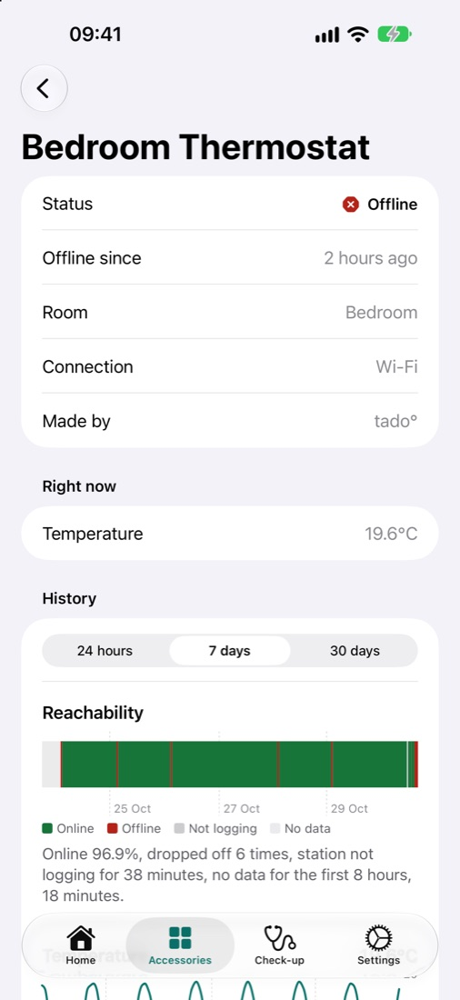
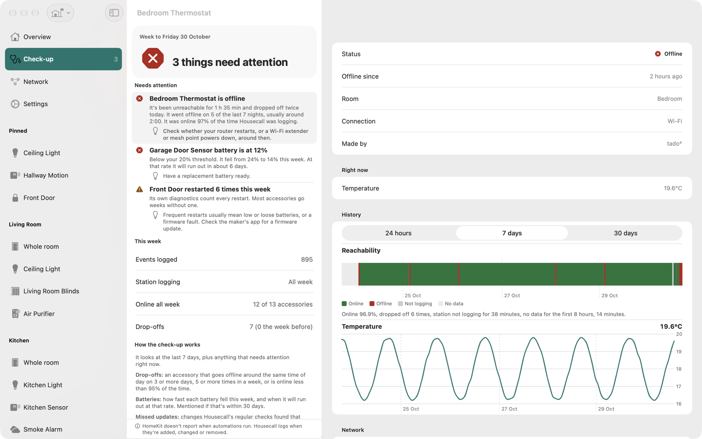
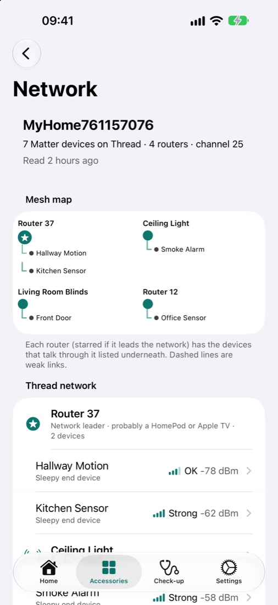

Know what happened, and why.
Apple Home shows you what's happening now. Housecall remembers everything that has happened, and notices the patterns you'd miss.
A weekly check-up
A ranked, plain-English report: what dropped off, which batteries are running down, what keeps restarting, and what to try.
Every change, every brand
Lights, sensors, locks, blinds and thermostats, plus accessories going offline and back. Searchable, and fast with millions of events.
Thread & Matter diagnostics
See which router each device talks through, how strong the link is, and which devices ended up on a separate Thread network.
Alerts that respect your sleep
Offline, low battery, stuck sensors, weak signals. Set thresholds per accessory, and quiet hours save alerts for one morning summary.
Your Mac keeps watch
Your Mac logs around the clock, even with its window closed, and shows a menu-bar count when something needs attention.
Private by design
Your data stays on your devices and in your own iCloud. No servers, no account, no analytics, no tracking.
Plain English, not log files.
Every finding says what Housecall saw and what to try.
“Bedroom Thermostat drops off most nights, usually around 2:00. Check whether your router restarts, or a Wi-Fi extender powers down, around then.”
“Garage Door Sensor battery fell from 24% to 14% this week. At that rate it will run out in about 6 days.”
“Your Mac wasn't logging for 14 hours this week, mostly while asleep.”

Built for the Mac, too.
Three columns, keyboard shortcuts, multiple windows and a menu-bar item. Ideal for a Mac that's always on.


See inside your Thread network.
Matter accessories share diagnostics that the Home app never shows.
- Which router each device talks through, and how strong its link is
- Devices stranded on a second Thread network
- Restarts counted every week, because a lock that restarts daily is telling you something
- Honest about what it can't see: HomePods don't share diagnostics, so Housecall shows them by number
Free to start. Pro when you want the check-up.
Free logs everything and never deletes your history. Pro unlocks the weekly check-up, full history, charts, diagnostics, widgets, exports and multiple homes.
Monthly
Cancel any time.
Annual
Saves 44% on monthly. Family Sharing included.
Lifetime
Every Pro feature, for good. Family Sharing included.
UK prices. Prices in other countries are set by the App Store. One purchase covers iPhone, iPad and Mac.
Questions
Do I need a Mac?
For round-the-clock logging, yes. Apple only lets apps receive Home updates while they're running, so your Mac acts as the always-on station. Your iPhone and iPad show its history and get its alerts, and they also log while they're open.
Do I need Homebridge or Home Assistant?
No. Housecall works directly with the accessories in your Apple Home app, from any brand. Thread diagnostics are for Matter accessories.
Can it tell who turned something on?
No, and it won't guess. HomeKit doesn't tell apps who or what made a change, or when an automation ran. Housecall says how it saw each change, never who made it.
Where is my data?
On your devices and in your own private iCloud. Housecall has no servers and can't see your data. See the privacy policy.
What happens if I stop paying?
Housecall keeps logging and keeps all your history. You'll see the last 7 days until you resubscribe, and then everything comes back.